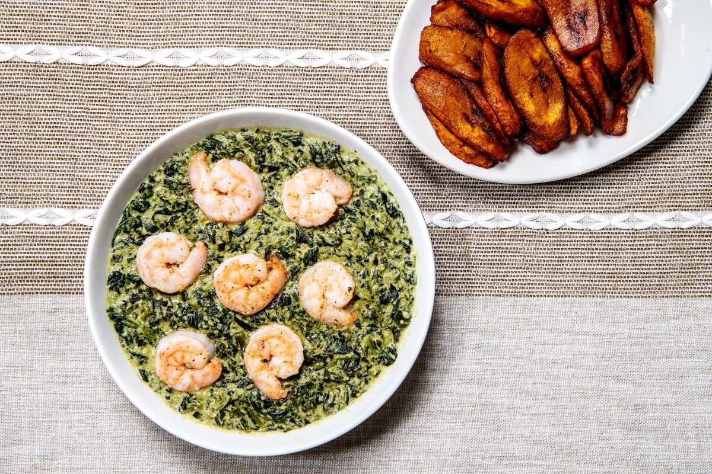

Ndole recipe

A mouth watering dish
This dish is one of the most popular dishes in Cameroon. It is best enjoyed with miondo(a form grounded fermented cassava).
Ingredients
- Raw peanuts
- Washed bitterleaf
- Fresh shrimps
- Dried crayfish
- Vegetable oil
- Maggi cubes
- Beef
- Onions
- Garlic
- Cameroon peper
- Salt
Preparation
- Cut the beef into dice shape then boil it with some maggi seasoning and salt
- Wash the peanut,boil it then let it cool a bit
- In a blender put the peanuts,onion,Cameroon peper,dried crayfish and garlic then blend
- Pour the blended mixture into the boiling meat,add some maggi cubes to taste and let them cook together for 20mins
- Add the washed bitterleaves in the cooked peanut mixture and let it boil for 10 more minutes
- Fry the fresh shrimps on the side with some onions and pour everything in the pot of Ndole
- It is ready! Serve with miondo and glass of cold drink